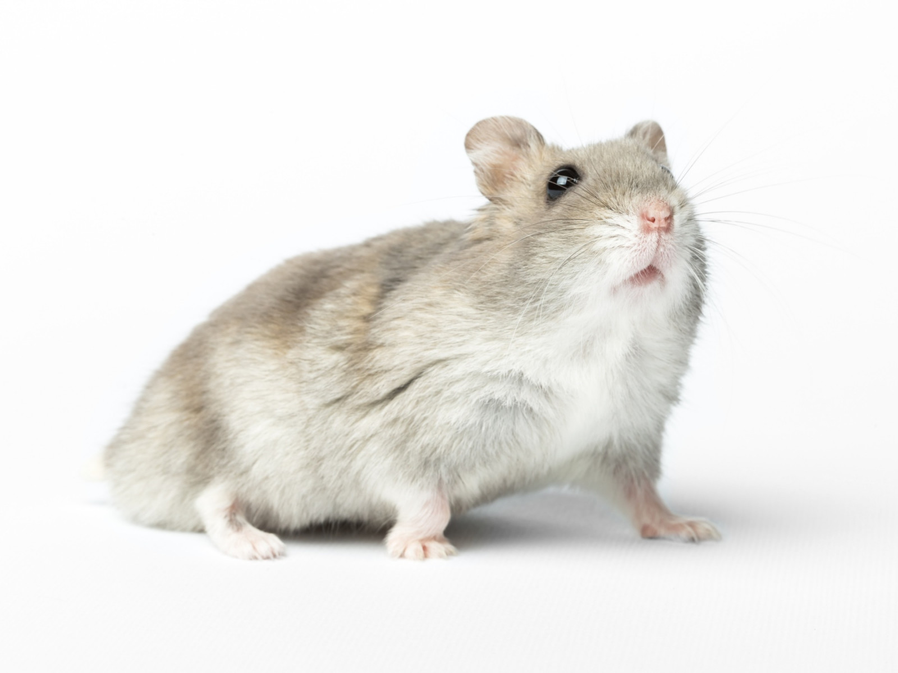

<!DOCTYPE HTML>

<html>

<head>
  <title>Untitled</title>
</head>

<body>

</p>
</body> Dla początkującego hodowcy najlepszym wyborem będzie chomik syryjski (złoty). Oto kilka powodów, dlaczego:

Łatwość w pielęgnacji: Chomiki syryjskie są stosunkowo łatwe w pielęgnacji i dobrze znoszą kontakt z ludźmi.

Przyjacielski charakter: Zwykle są towarzyskie i lubią interakcję z opiekunami, co czyni je dobrymi zwierzętami domowymi.

Duża dostępność: Są powszechnie dostępne w sklepach zoologicznych, więc łatwo je znaleźć.

Mniejsze wymagania dotyczące przestrzeni: Chociaż potrzebują odpowiedniej klatki i miejsca do zabawy, nie mają tak dużych wymagań jak niektóre inne gatunki.

Jedno zwierzę w klatce: Chomiki syryjskie są terytorialne i powinny być trzymane pojedynczo, co upraszcza opiekę.

Jeśli jednak interesuje Cię inny gatunek, chomik dżungarski to kolejna dobra opcja. Są nieco mniejsze i również mają przyjazny charakter, ale wymagają nieco więcej uwagi w zakresie socjalizacji.
    </p>

  <a href="strona1.html">Powrot</a>


      </p>

" alt="">

</html>